| ANON_ID | Birthdate | Gen | Eth | Fluency | SpEd | Grade | AttRate | DaysEnr | DaysAbs | Susp | CurrWeightedTotGPA | SED | School | Year | |
|---|---|---|---|---|---|---|---|---|---|---|---|---|---|---|---|
| 0 | 338 | 2003-07-21 | F | Latino | RFEP | Not Special Ed | 9 | 0.9889 | 180.0 | 2.0 | NaN | 3.65 | Unknown | Castlemont | 17-18 |
| 1 | 340 | 2003-03-31 | M | Latino | EL | Not Special Ed | 9 | 0.8389 | 180.0 | 29.0 | 2.0 | 0.06 | Unknown | Castlemont | 17-18 |
| 2 | 478 | 2003-09-06 | F | Multiple Ethnicity | EO | Special Ed | 9 | 0.7263 | 179.0 | 49.0 | 1.0 | 0.24 | Unknown | Castlemont | 17-18 |
| 3 | 686 | 2000-04-02 | M | Latino | EL | Not Special Ed | 12 | 0.9611 | 180.0 | 7.0 | NaN | 2.00 | Unknown | Castlemont | 17-18 |
| 4 | 693 | 2002-03-28 | F | Latino | RFEP | Not Special Ed | 10 | 0.9889 | 180.0 | 2.0 | NaN | 2.59 | Unknown | Castlemont | 17-18 |
Introduction
Chronic absenteeism—defined here as missing more than 10% of enrolled days—can have a profound impact on a student’s academic performance and future prospects. Frequent absences correlate with lower grades, increased dropout rates, and diminished long-term outcomes. By understanding which factors drive absenteeism, educators and policymakers can design more targeted interventions.
In this notebook, I analyze records from seven schools over seven academic years. My overarching goal is to identify patterns and predictors of chronic absenteeism, with the ultimate aim of guiding effective attendance-improvement strategies.
Motivation
Student attendance is more than just a line item in school administrative data. It’s linked to:
- Academic Achievement: Students who attend school regularly often see better test scores and improved GPAs.
- Equity Considerations: Certain demographic groups (e.g., English Learners, low-income students) might face unique challenges that affect attendance.
- Resource Allocation: Understanding absenteeism helps schools allocate counselors, attendance monitors, and program funding more effectively.
- Long-Term Impact: Chronic absenteeism in earlier grades can ripple through a student’s educational trajectory, potentially influencing high school completion and college readiness.
By examining variables such as attendance rates, days enrolled, demographic details, and special program status, I seek to paint a clearer picture of how these features interrelate and what they reveal about absenteeism trends.
Dataset Description
This data exploration uses a combined dataset (schools) that merges individual CSV files from seven different schools:
- Castlemont
- East Oakland PRIDE
- Elmhurst United
- MLK
- McClymonds
- Prescott
- WOMS
Each file spans multiple academic years, resulting in a total of over 20,000 student-year observations. The key columns include:
- ANON_ID: A unique, anonymized student identifier.
- Birthdate: Date of birth, from which I derived each student’s approximate age.
- Gen: Student’s gender.
- Eth: Ethnicity (e.g., Latino, African American, White, etc.).
- Fluency: English proficiency classification (e.g., EO, EL, RFEP, IFEP).
- SpEd: Special Education status (e.g., “Special Ed” or “Not Special Ed”).
- Grade: Student’s grade for that academic year (-1 through 12 in this dataset).
- AttRate: Attendance rate (1 – [Days Absent / Days Enrolled]).
- DaysEnr: Number of days enrolled in that school year.
- DaysAbs: Number of days absent in that school year.
- Susp: Number of suspensions.
- CurrWeightedTotGPA: Weighted GPA, if applicable.
- SED: Socio-economically Disadvantaged status.
- School: Name of the school.
- Year: Academic year label (e.g., “17-18”, “18-19”).
- Age: Computed from birth year and the school year.
- ChroAbs: Binary variable (1 if absent more than 10% of enrolled days, 0 otherwise).
| ANON_ID | Birthdate | Gen | Eth | Fluency | SpEd | Grade | AttRate | DaysEnr | DaysAbs | Susp | CurrWeightedTotGPA | SED | School | Year | Age | |
|---|---|---|---|---|---|---|---|---|---|---|---|---|---|---|---|---|
| 0 | 338 | 2003-07-21 | F | Latino | RFEP | Not Special Ed | 9 | 0.9889 | 180.0 | 2.0 | NaN | 3.65 | Unknown | Castlemont | 17-18 | 14 |
| 1 | 340 | 2003-03-31 | M | Latino | EL | Not Special Ed | 9 | 0.8389 | 180.0 | 29.0 | 2.0 | 0.06 | Unknown | Castlemont | 17-18 | 14 |
| 2 | 478 | 2003-09-06 | F | Multiple Ethnicity | EO | Special Ed | 9 | 0.7263 | 179.0 | 49.0 | 1.0 | 0.24 | Unknown | Castlemont | 17-18 | 14 |
| 3 | 686 | 2000-04-02 | M | Latino | EL | Not Special Ed | 12 | 0.9611 | 180.0 | 7.0 | NaN | 2.00 | Unknown | Castlemont | 17-18 | 17 |
| 4 | 693 | 2002-03-28 | F | Latino | RFEP | Not Special Ed | 10 | 0.9889 | 180.0 | 2.0 | NaN | 2.59 | Unknown | Castlemont | 17-18 | 15 |
| ANON_ID | Birthdate | Gen | Eth | Fluency | SpEd | Grade | AttRate | DaysEnr | DaysAbs | Susp | CurrWeightedTotGPA | SED | School | Year | Age | ChroAbs | |
|---|---|---|---|---|---|---|---|---|---|---|---|---|---|---|---|---|---|
| 21989 | 77312 | 2009-10-26 | M | African American | EO | Not Special Ed | 8 | 0.9611 | 180.0 | 7.0 | NaN | 2.39 | SED | WOMS | 23-24 | 14 | 0 |
| 21990 | 77803 | 2011-06-30 | M | Latino | EO | Special Ed | 7 | 0.6222 | 45.0 | 17.0 | NaN | 0.00 | SED | WOMS | 23-24 | 12 | 1 |
| 21991 | 78129 | 2011-10-09 | F | Latino | RFEP | Not Special Ed | 6 | 0.9441 | 179.0 | 10.0 | NaN | 3.38 | Not SED | WOMS | 23-24 | 12 | 0 |
| 21992 | 78498 | 2011-06-21 | M | African American | EO | Not Special Ed | 7 | 0.9333 | 180.0 | 12.0 | NaN | 3.66 | SED | WOMS | 23-24 | 12 | 0 |
| 21993 | 79427 | 2012-01-10 | M | Latino | RFEP | Not Special Ed | 6 | 0.7375 | 80.0 | 21.0 | NaN | 3.37 | SED | WOMS | 23-24 | 11 | 1 |
1. Dataset Overview
(21994, 17)Castlemont (6456, 17)
East Oakland PRIDE (2634, 17)
Elmhurst United (4989, 17)
MLK (2720, 17)
McClymonds (2566, 17)
Prescott (1079, 17)
WOMS (1550, 17)Castlemont 17-18 (984, 17)
Castlemont 18-19 (994, 17)
Castlemont 19-20 (931, 17)
Castlemont 20-21 (874, 17)
Castlemont 21-22 (896, 17)
Castlemont 22-23 (903, 17)
Castlemont 23-24 (874, 17)
East Oakland PRIDE 17-18 (402, 17)
East Oakland PRIDE 18-19 (406, 17)
East Oakland PRIDE 19-20 (393, 17)
East Oakland PRIDE 20-21 (351, 17)
East Oakland PRIDE 21-22 (353, 17)
East Oakland PRIDE 22-23 (353, 17)
East Oakland PRIDE 23-24 (376, 17)
Elmhurst United 17-18 (429, 17)
Elmhurst United 18-19 (432, 17)
Elmhurst United 19-20 (825, 17)
Elmhurst United 20-21 (805, 17)
Elmhurst United 21-22 (826, 17)
Elmhurst United 22-23 (839, 17)
Elmhurst United 23-24 (833, 17)
MLK 17-18 (321, 17)
MLK 18-19 (380, 17)
MLK 19-20 (453, 17)
MLK 20-21 (397, 17)
MLK 21-22 (397, 17)
MLK 22-23 (379, 17)
MLK 23-24 (393, 17)
McClymonds 17-18 (419, 17)
McClymonds 18-19 (408, 17)
McClymonds 19-20 (391, 17)
McClymonds 20-21 (400, 17)
McClymonds 21-22 (357, 17)
McClymonds 22-23 (302, 17)
McClymonds 23-24 (289, 17)
Prescott 17-18 (209, 17)
Prescott 18-19 (182, 17)
Prescott 19-20 (147, 17)
Prescott 20-21 (135, 17)
Prescott 21-22 (119, 17)
Prescott 22-23 (127, 17)
Prescott 23-24 (160, 17)
WOMS 17-18 (218, 17)
WOMS 18-19 (232, 17)
WOMS 19-20 (235, 17)
WOMS 20-21 (235, 17)
WOMS 21-22 (221, 17)
WOMS 22-23 (210, 17)
WOMS 23-24 (199, 17)Gen
| Gen | |
|---|---|
| M | 11857 |
| F | 10113 |
| N | 24 |
Eth
| Eth | |
|---|---|
| Latino | 10645 |
| African American | 8335 |
| White | 840 |
| Asian | 753 |
| Not Reported | 526 |
| Multiple Ethnicity | 424 |
| Pacific Islander | 358 |
| Native American | 63 |
| Filipino | 50 |
Fluency
| Fluency | |
|---|---|
| EO | 10653 |
| EL | 8281 |
| RFEP | 2688 |
| IFEP | 266 |
| TBD | 100 |
| Unknown | 6 |
SpEd
| SpEd | |
|---|---|
| Not Special Ed | 18144 |
| Special Ed | 3850 |
Grade
| Grade | |
|---|---|
| 9 | 2623 |
| 10 | 2540 |
| 7 | 2189 |
| 6 | 2182 |
| 8 | 2168 |
| 11 | 2148 |
| 12 | 1711 |
| 1 | 1089 |
| 3 | 1065 |
| 2 | 1036 |
| 4 | 1015 |
| 0 | 980 |
| 5 | 940 |
| -1 | 308 |
SED
| SED | |
|---|---|
| SED | 14363 |
| Unknown | 6317 |
| Not SED | 1314 |
Age
| Age | |
|---|---|
| 16 | 2267 |
| 13 | 2253 |
| 12 | 2236 |
| 17 | 2176 |
| 15 | 2142 |
| 14 | 2134 |
| 11 | 1785 |
| 7 | 1036 |
| 8 | 1033 |
| 6 | 1020 |
| 9 | 1017 |
| 10 | 981 |
| 5 | 814 |
| 18 | 798 |
| 19 | 161 |
| 4 | 96 |
| 20 | 41 |
| 21 | 4 |
Year
| Year | |
|---|---|
| 19-20 | 3375 |
| 20-21 | 3197 |
| 21-22 | 3169 |
| 23-24 | 3124 |
| 22-23 | 3113 |
| 18-19 | 3034 |
| 17-18 | 2982 |
School
| School | |
|---|---|
| Castlemont | 6456 |
| Elmhurst United | 4989 |
| MLK | 2720 |
| East Oakland PRIDE | 2634 |
| McClymonds | 2566 |
| WOMS | 1550 |
| Prescott | 1079 |
ChroAbs
| ChroAbs | |
|---|---|
| 0 | 11882 |
| 1 | 10112 |
<class 'pandas.core.frame.DataFrame'>
RangeIndex: 21994 entries, 0 to 21993
Data columns (total 17 columns):
# Column Non-Null Count Dtype
--- ------ -------------- -----
0 ANON_ID 21994 non-null int64
1 Birthdate 21994 non-null datetime64[ns]
2 Gen 21994 non-null object
3 Eth 21994 non-null object
4 Fluency 21994 non-null object
5 SpEd 21994 non-null object
6 Grade 21994 non-null int64
7 AttRate 21965 non-null float64
8 DaysEnr 21965 non-null float64
9 DaysAbs 21965 non-null float64
10 Susp 1438 non-null float64
11 CurrWeightedTotGPA 15553 non-null float64
12 SED 21994 non-null object
13 School 21994 non-null object
14 Year 21994 non-null object
15 Age 21994 non-null int64
16 ChroAbs 21994 non-null int64
dtypes: datetime64[ns](1), float64(5), int64(4), object(7)
memory usage: 2.9+ MB| 0 | |
|---|---|
| ANON_ID | 0 |
| Birthdate | 0 |
| Gen | 0 |
| Eth | 0 |
| Fluency | 0 |
| SpEd | 0 |
| Grade | 0 |
| AttRate | 29 |
| DaysEnr | 29 |
| DaysAbs | 29 |
| Susp | 20556 |
| CurrWeightedTotGPA | 6441 |
| SED | 0 |
| School | 0 |
| Year | 0 |
| Age | 0 |
| ChroAbs | 0 |
| 0 | |
|---|---|
| ANON_ID | 0.000000 |
| Birthdate | 0.000000 |
| Gen | 0.000000 |
| Eth | 0.000000 |
| Fluency | 0.000000 |
| SpEd | 0.000000 |
| Grade | 0.000000 |
| AttRate | 0.001319 |
| DaysEnr | 0.001319 |
| DaysAbs | 0.001319 |
| Susp | 0.934619 |
| CurrWeightedTotGPA | 0.292853 |
| SED | 0.000000 |
| School | 0.000000 |
| Year | 0.000000 |
| Age | 0.000000 |
| ChroAbs | 0.000000 |
2. Exploratory Data Analysis
2.a Numerical Distributions: Attendance Rate, Days Enrolled, Days Absent
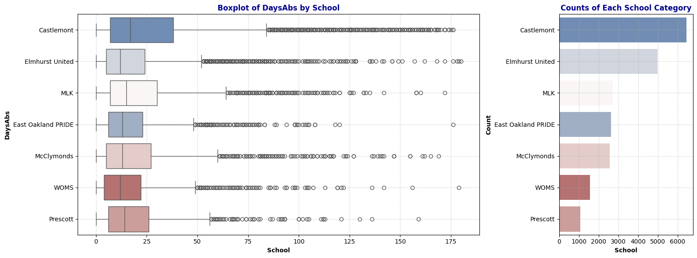
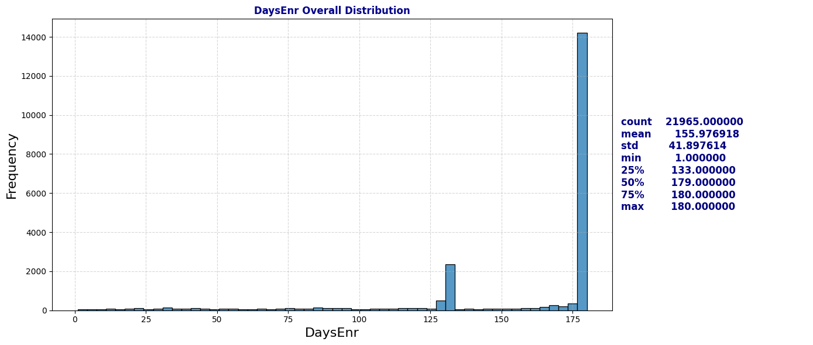
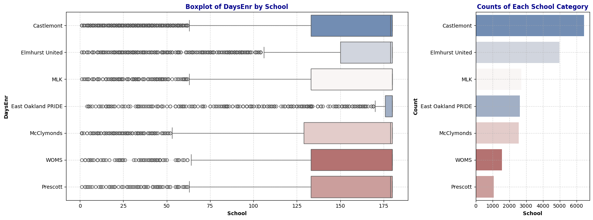
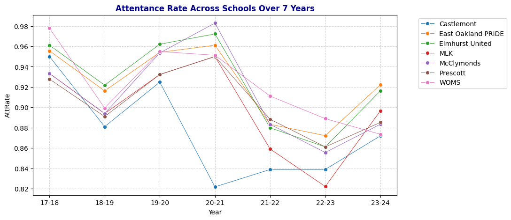
Observation: The distribution of Days Absent closely mirrors that of Attendance Rate, indicating a strong dependency between the two. We can consider dropping the DaysAbs column later to avoid redundancy.
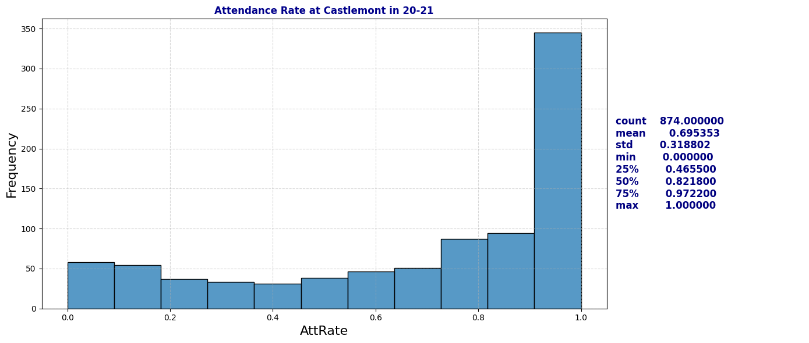
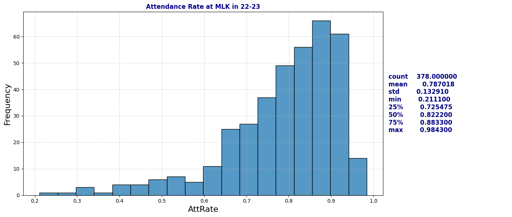
Observation: The Days Enrolled column contains numerous unusually low values. This raises questions about the underlying causes (further research on how schools report days enrolled may be necessary). We may also need to reconsider the definition of chronic absenteeism (where the ratio of days absent to days enrolled is greater than 10%), as low values for days enrolled could disproportionately impact the chronic absenteeism rate.
2b. Time Series over Year: Attendance Rate and Chronic Absenteeism Percentage
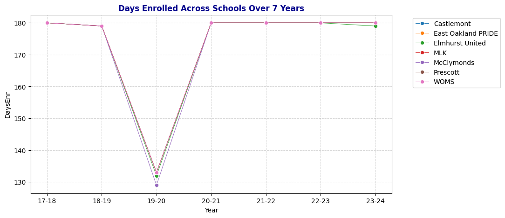
Dive deeper into MLK and Castlemont Attendance Rate Distribution
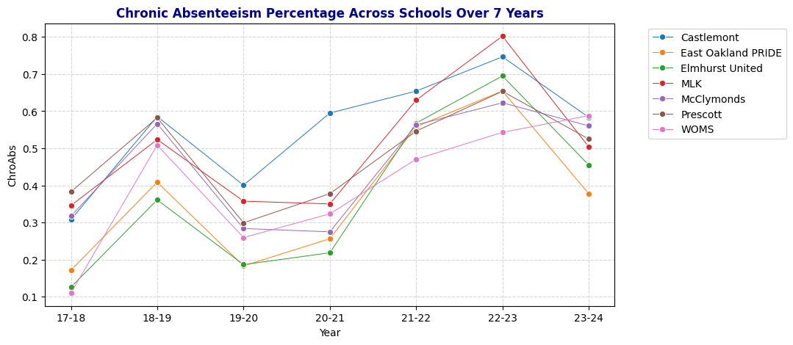
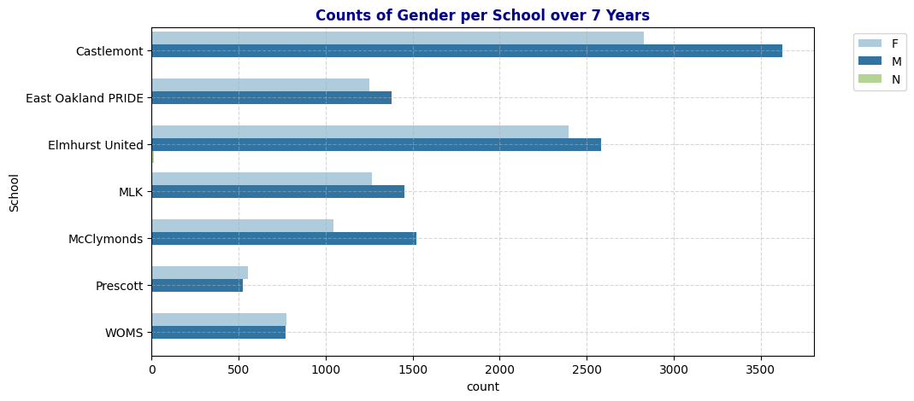
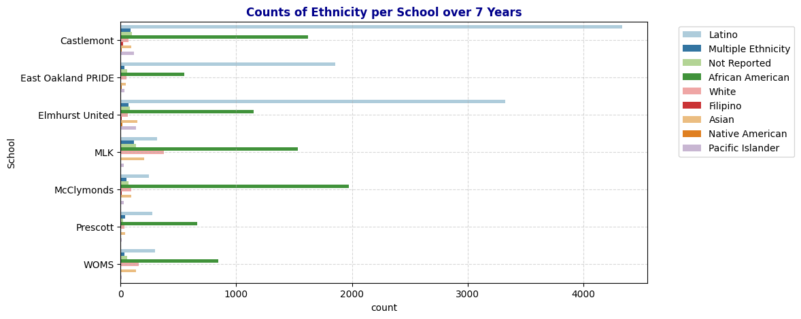
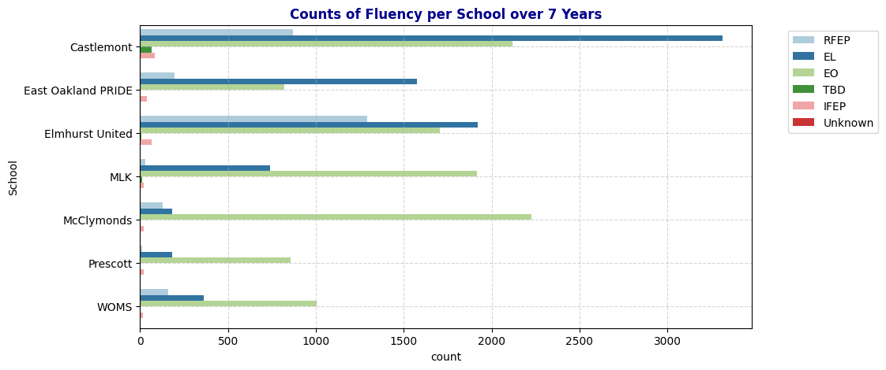
Quick observation: Even though 19-20 has lowest median days enrolled but the percentage of chronically absent student are under 40%. School years 21-22 and 22-23 have high chronic absenteeism percentage.
2c. Demographic Factors: Gender, Ethnicity, Fluency, Special Education and Socio-economically Disadvantaged Status
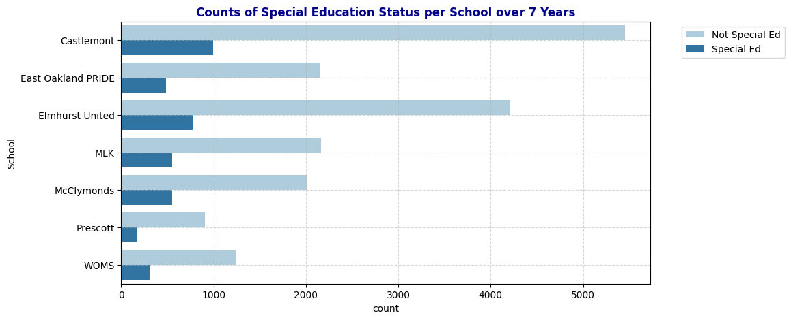
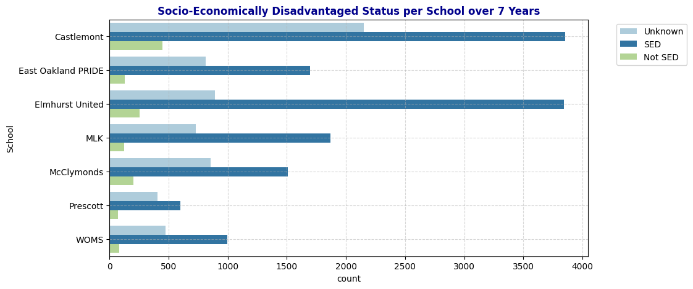
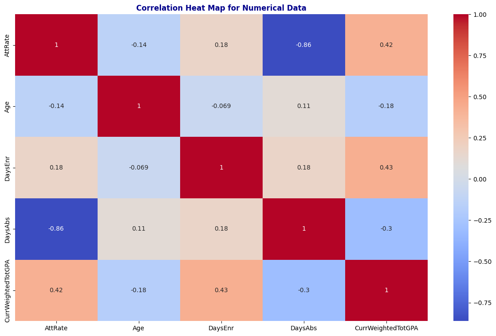
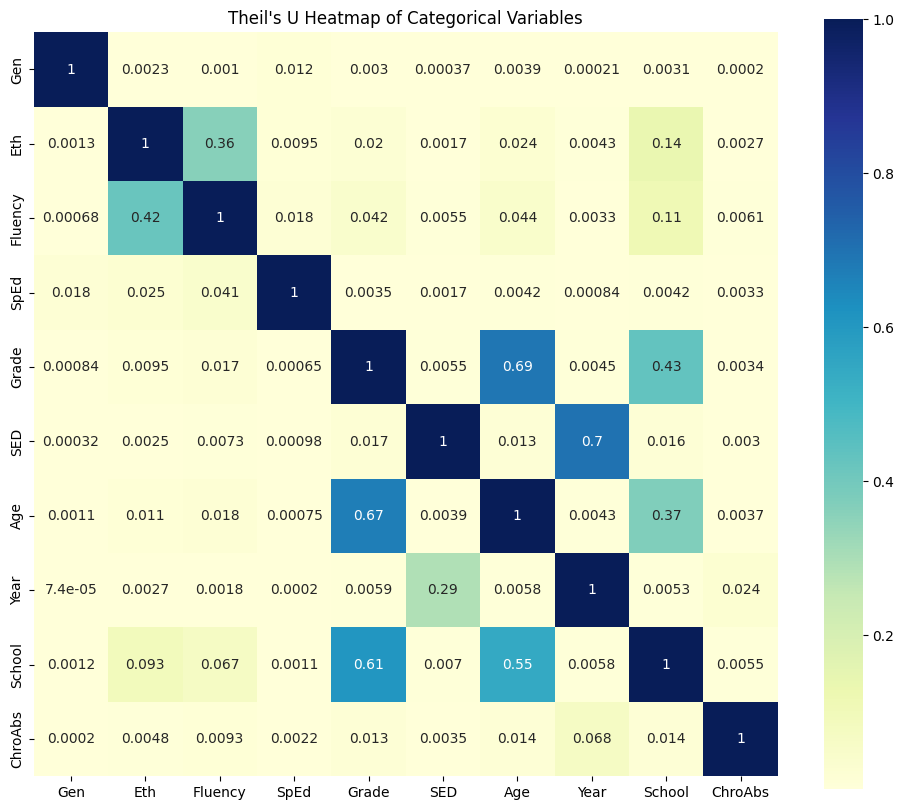

Heat Map
Numerical Data: Pearson’s Correlation to Visualize Linear Relationship of Each Pair.

Observation: Pairs that has high correlation 1. (DaysAbs, AttRate): This is because of their dependency. 2. (DaysEnr, CurrWeightedTotGPA): positive linear relationship with correlation = 0.43. Not interested in this since it does not relate to our problem of chronic absenteeism. 3. (AttRate, CurrWeightedTotGPA): postive linear relationship with correlation = 0.42. Will investigate this further.

Categorical Correlations: Using Theil’s U to Visualize Predictive Strength between Two Categorical Variables
Using Theil’s U to see relationship between categorical variables, range is [0,1] and asymmetric.
More on this: https://towardsdatascience.com/the-search-for-categorical-correlation-a1cf7f1888c9

Observation: The factors with the strongest predictive power on Chronic Absenteeism are ranked as follows: Year > School > Age > Grade > Fluency > Ethnicity > SED > SpEd > Gender.
Additionally, the map shows that Grade has a strong predictive relationship with both School and Age (correlations of 0.81 and 0.67, respectively). This is logical, as schools are divided into levels (e.g., Elementary, Middle, High School), each covering specific grade ranges. Similarly, students are typically placed in grades based on their age. This alignment is reflected in the fact that these three variables—Grade, School, and Age—have similar correlation values with Chronic Absenteeism, indicating they offer comparable predictive power for absenteeism. Therefore, when building a predictive model, it may be beneficial to select only one of these variables to avoid redundancy and reduce model complexity.
Another noteworthy observation is the moderate predictive power of SED on Year (0.29), while Year has a stronger predictive power on SED (0.7). Further investigation is needed to understand the underlying reasons for this relationship.


3. Data Cleaning
##3a. Handle Missing Values
| 0 | |
|---|---|
| ANON_ID | 0 |
| Birthdate | 0 |
| Gen | 0 |
| Eth | 0 |
| Fluency | 0 |
| SpEd | 0 |
| Grade | 0 |
| AttRate | 29 |
| DaysEnr | 29 |
| DaysAbs | 29 |
| Susp | 20556 |
| CurrWeightedTotGPA | 6441 |
| SED | 0 |
| School | 0 |
| Year | 0 |
| Age | 0 |
| ChroAbs | 0 |
We need to handle misisng values in columns AttRate,DaysEnr, DaysAbs,Susp, and CurrWeightedTotGPA
Suspension: Fill all missing values with 0, as students with no suspension records from schools are assumed to have none.
| 0 | |
|---|---|
| ANON_ID | 0 |
| Birthdate | 0 |
| Gen | 0 |
| Eth | 0 |
| Fluency | 0 |
| SpEd | 0 |
| Grade | 0 |
| AttRate | 29 |
| DaysEnr | 29 |
| DaysAbs | 29 |
| Susp | 0 |
| CurrWeightedTotGPA | 6441 |
| SED | 0 |
| School | 0 |
| Year | 0 |
| Age | 0 |
| ChroAbs | 0 |
AttRate, DaysEnr, and Days Abs: Some students have records for the following year, meaning missing values for these fields are likely from newly enrolled students. Some students appear only once, suggesting they did not stay enrolled the following year. Since the percentage of these students per school is low, drop those rows with missing values in these columns, as they do not provide meaningful information and do not significantly impact the overall dataset.
| count | |
|---|---|
| ANON_ID | |
| 46788 | 3 |
| 74073 | 3 |
| 74195 | 3 |
| 45261 | 3 |
| 23826 | 3 |
| 76869 | 3 |
| 76885 | 3 |
| 67766 | 2 |
| 11215 | 2 |
| 17509 | 2 |
| 5645 | 2 |
| 37190 | 2 |
| 54615 | 2 |
| 31347 | 2 |
| 74203 | 2 |
| 54845 | 2 |
| 76930 | 1 |
| 44957 | 1 |
| 49492 | 1 |
| 49493 | 1 |
| 45784 | 1 |
| 58263 | 1 |
| 75819 | 1 |
| 60842 | 1 |
| 60070 | 1 |
| 51972 | 1 |
| 56537 | 1 |
| 73585 | 1 |
| 62638 | 1 |
| ANON_ID | Birthdate | Gen | Eth | Fluency | SpEd | Grade | AttRate | DaysEnr | DaysAbs | Susp | CurrWeightedTotGPA | SED | School | Year | Age | ChroAbs | |
|---|---|---|---|---|---|---|---|---|---|---|---|---|---|---|---|---|---|
| 2855 | 74195 | 2004-10-26 | M | Latino | RFEP | Not Special Ed | 10 | NaN | NaN | NaN | 0.0 | 0.00 | SED | Castlemont | 19-20 | 15 | 0 |
| 3737 | 74195 | 2004-10-26 | M | Latino | RFEP | Not Special Ed | 11 | 0.2333 | 180.0 | 138.0 | 0.0 | 0.00 | SED | Castlemont | 20-21 | 16 | 1 |
| 4621 | 74195 | 2004-10-26 | M | Latino | RFEP | Not Special Ed | 12 | 0.5056 | 180.0 | 89.0 | 0.0 | 1.75 | SED | Castlemont | 21-22 | 17 | 1 |
| AttRate | |
|---|---|
| School | |
| Castlemont | 0.002169 |
| East Oakland PRIDE | 0.001519 |
| Elmhurst United | 0.000401 |
| MLK | 0.001103 |
| McClymonds | 0.001949 |
| Prescott | 0.000000 |
| WOMS | 0.000645 |
| 0 | |
|---|---|
| ANON_ID | 0 |
| Birthdate | 0 |
| Gen | 0 |
| Eth | 0 |
| Fluency | 0 |
| SpEd | 0 |
| Grade | 0 |
| AttRate | 0 |
| DaysEnr | 0 |
| DaysAbs | 0 |
| Susp | 0 |
| CurrWeightedTotGPA | 6434 |
| SED | 0 |
| School | 0 |
| Year | 0 |
| Age | 0 |
| ChroAbs | 0 |
CurrWeightedTotGPA:
All records for grades -1 through 5 have missing values in the GPA column, with a small percentage of missing values also present for grades 9, 10, and 11. Given the strong correlation between GPA and Absent Rate, as shown in the correlation heatmap in section 2, it’s essential to retain this column in a way that minimizes noise. We cannot assign a numerical GPA to records in grades -1 to 5, as arbitrary values could misrepresent GPA meaningfully.
To address this, I propose creating a new variable, Academic Status, which categorizes GPA into four levels:
Good: GPA ≥ 3.0 Average: 2.0 ≤ GPA < 3.0 At Risk: GPA < 2.0 Unknown: GPA is NaN
After creating Academic Status, we can drop the GPA column and explore the relationship between this new variable and the response variable, ChroAbs.
| CurrWeightedTotGPA | |
|---|---|
| Grade | |
| -1 | 1.000000 |
| 0 | 1.000000 |
| 1 | 1.000000 |
| 2 | 1.000000 |
| 3 | 1.000000 |
| 4 | 1.000000 |
| 5 | 1.000000 |
| 6 | 0.000000 |
| 7 | 0.000000 |
| 8 | 0.000000 |
| 9 | 0.001144 |
| 10 | 0.001181 |
| 11 | 0.000931 |
| 12 | 0.000000 |
| ANON_ID | Birthdate | Gen | Eth | Fluency | SpEd | Grade | AttRate | DaysEnr | DaysAbs | Susp | SED | School | Year | Age | ChroAbs | AcademicStatus | |
|---|---|---|---|---|---|---|---|---|---|---|---|---|---|---|---|---|---|
| 0 | 338 | 2003-07-21 | F | Latino | RFEP | Not Special Ed | 9 | 0.9889 | 180.0 | 2.0 | 0.0 | Unknown | Castlemont | 17-18 | 14 | 0 | Good |
| 1 | 340 | 2003-03-31 | M | Latino | EL | Not Special Ed | 9 | 0.8389 | 180.0 | 29.0 | 2.0 | Unknown | Castlemont | 17-18 | 14 | 1 | AtRisk |
| 2 | 478 | 2003-09-06 | F | Multiple Ethnicity | EO | Special Ed | 9 | 0.7263 | 179.0 | 49.0 | 1.0 | Unknown | Castlemont | 17-18 | 14 | 1 | AtRisk |
| 3 | 686 | 2000-04-02 | M | Latino | EL | Not Special Ed | 12 | 0.9611 | 180.0 | 7.0 | 0.0 | Unknown | Castlemont | 17-18 | 17 | 0 | Average |
| 4 | 693 | 2002-03-28 | F | Latino | RFEP | Not Special Ed | 10 | 0.9889 | 180.0 | 2.0 | 0.0 | SED | Castlemont | 17-18 | 15 | 0 | Average |
| 0 | |
|---|---|
| ANON_ID | 0 |
| Birthdate | 0 |
| Gen | 0 |
| Eth | 0 |
| Fluency | 0 |
| SpEd | 0 |
| Grade | 0 |
| AttRate | 0 |
| DaysEnr | 0 |
| DaysAbs | 0 |
| Susp | 0 |
| SED | 0 |
| School | 0 |
| Year | 0 |
| Age | 0 |
| ChroAbs | 0 |
| AcademicStatus | 0 |
Missing Values: Before and After
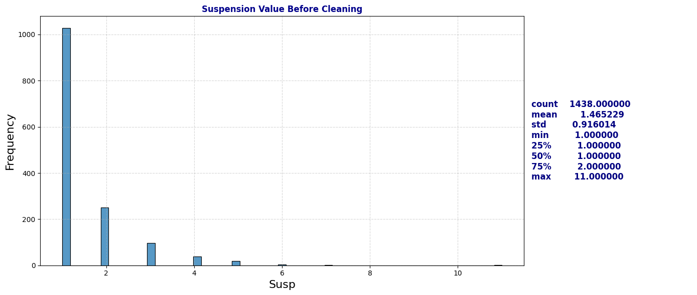
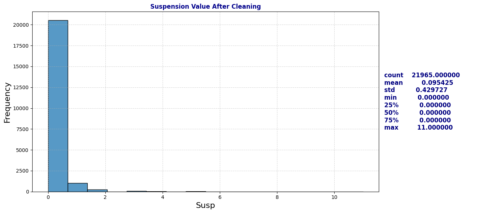
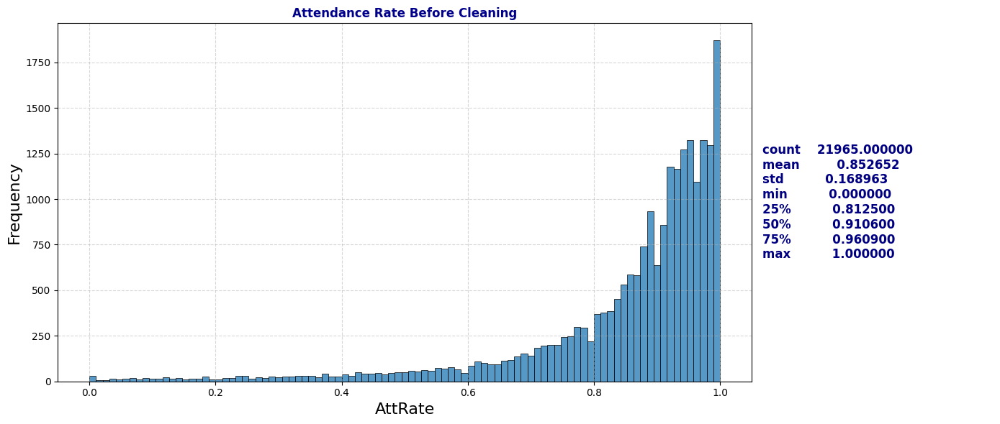
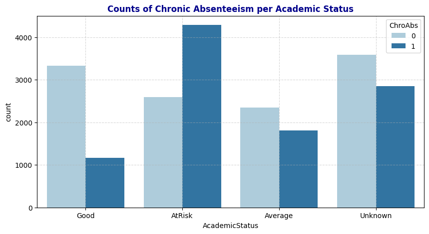
3b. Handle Duplicates and Irrelevant Data
Gen
| Gen | |
|---|---|
| M | 11857 |
| F | 10113 |
| N | 24 |
Eth
| Eth | |
|---|---|
| Latino | 10645 |
| African American | 8335 |
| White | 840 |
| Asian | 753 |
| Not Reported | 526 |
| Multiple Ethnicity | 424 |
| Pacific Islander | 358 |
| Native American | 63 |
| Filipino | 50 |
Fluency
| Fluency | |
|---|---|
| EO | 10653 |
| EL | 8281 |
| RFEP | 2688 |
| IFEP | 266 |
| TBD | 100 |
| Unknown | 6 |
SpEd
| SpEd | |
|---|---|
| Not Special Ed | 18144 |
| Special Ed | 3850 |
Grade
| Grade | |
|---|---|
| 9 | 2623 |
| 10 | 2540 |
| 7 | 2189 |
| 6 | 2182 |
| 8 | 2168 |
| 11 | 2148 |
| 12 | 1711 |
| 1 | 1089 |
| 3 | 1065 |
| 2 | 1036 |
| 4 | 1015 |
| 0 | 980 |
| 5 | 940 |
| -1 | 308 |
SED
| SED | |
|---|---|
| SED | 14363 |
| Unknown | 6317 |
| Not SED | 1314 |
Age
| Age | |
|---|---|
| 16 | 2267 |
| 13 | 2253 |
| 12 | 2236 |
| 17 | 2176 |
| 15 | 2142 |
| 14 | 2134 |
| 11 | 1785 |
| 7 | 1036 |
| 8 | 1033 |
| 6 | 1020 |
| 9 | 1017 |
| 10 | 981 |
| 5 | 814 |
| 18 | 798 |
| 19 | 161 |
| 4 | 96 |
| 20 | 41 |
| 21 | 4 |
ChroAbs
| ChroAbs | |
|---|---|
| 0 | 11882 |
| 1 | 10112 |
Gender: has one unsual value of ‘m’. Modify it to “M”
| count | |
|---|---|
| Gen | |
| M | 11857 |
| F | 10113 |
| N | 24 |
Fluency:
There are 100 records labeled as TBD and 6 asUnknown in the Fluency column. Upon examining records with TBD, we find that these are primarily new enrollees. For students who reappear in subsequent years, their Fluency values are recorded in later years. Based on this insight, I fill Unknown or TBD entries in Fluency with matching values from other records with the same ANON_ID. After this process, 68 TBD and 2 Unknown entries remain, representing students who appear only once in the dataset—likely indicating that they did not re-enroll. Even though these students account for only 3% of the dataset, they still provide valuable information in other variables, such as Attendance Rate, SED, SpEd, etc. Therefore, I’ve decided to retain these records rather than dropping them. However, to simplify our model, I will consolidate TBD and Unknown into a single label, Unknown, in the Fluency column. This will help reduce model complexity while preserving the information these records offer.
| ANON_ID | Birthdate | Gen | Eth | Fluency | SpEd | Grade | AttRate | DaysEnr | DaysAbs | Susp | CurrWeightedTotGPA | SED | School | Year | Age | ChroAbs | |
|---|---|---|---|---|---|---|---|---|---|---|---|---|---|---|---|---|---|
| 4662 | 78297 | 2004-11-24 | M | Latino | Unknown | Not Special Ed | 10 | 0.9892 | 93.0 | 1.0 | NaN | 3.63 | Not SED | Castlemont | 21-22 | 17 | 0 |
| 4663 | 78298 | 2004-11-24 | M | Latino | Unknown | Not Special Ed | 10 | 0.9892 | 93.0 | 1.0 | NaN | 3.63 | Not SED | Castlemont | 21-22 | 17 | 0 |
| 5159 | 44057 | 2008-01-15 | F | Latino | Unknown | Not Special Ed | 9 | 0.5122 | 41.0 | 20.0 | NaN | 0.00 | Unknown | Castlemont | 22-23 | 14 | 1 |
| 12481 | 5911 | 2009-10-17 | F | Latino | Unknown | Not Special Ed | 7 | 0.7385 | 65.0 | 17.0 | NaN | 3.00 | Unknown | Elmhurst United | 22-23 | 13 | 1 |
| 15905 | 50958 | 2014-03-23 | M | White | Unknown | Not Special Ed | 1 | 0.9063 | 64.0 | 6.0 | NaN | NaN | Not SED | MLK | 21-22 | 7 | 0 |
| 20077 | 31810 | 2017-02-25 | M | Not Reported | Unknown | Not Special Ed | -1 | 0.0833 | 12.0 | 11.0 | NaN | NaN | SED | Prescott | 21-22 | 4 | 1 |
| ANON_ID | Birthdate | Gen | Eth | Fluency | SpEd | Grade | AttRate | DaysEnr | DaysAbs | Susp | CurrWeightedTotGPA | SED | School | Year | Age | ChroAbs | |
|---|---|---|---|---|---|---|---|---|---|---|---|---|---|---|---|---|---|
| 4662 | 78297 | 2004-11-24 | M | Latino | Unknown | Not Special Ed | 10 | 0.9892 | 93.0 | 1.0 | NaN | 3.63 | Not SED | Castlemont | 21-22 | 17 | 0 |
| 5571 | 78297 | 2004-11-24 | M | Latino | EL | Not Special Ed | 11 | 0.9056 | 180.0 | 17.0 | NaN | 3.43 | SED | Castlemont | 22-23 | 18 | 0 |
| 6442 | 78297 | 2004-11-24 | M | Latino | EL | Not Special Ed | 12 | 0.8833 | 180.0 | 21.0 | NaN | 2.40 | SED | Castlemont | 23-24 | 19 | 1 |
| count | |
|---|---|
| Fluency | |
| EO | 10638 |
| EL | 8308 |
| RFEP | 2683 |
| IFEP | 266 |
| TBD | 68 |
| Unknown | 2 |
Percentage of TBD and Unknown left in the dataset: 0.0031868882312770315| ANON_ID | Birthdate | Gen | Eth | Fluency | SpEd | Grade | AttRate | DaysEnr | DaysAbs | Susp | CurrWeightedTotGPA | SED | School | Year | Age | ChroAbs | |
|---|---|---|---|---|---|---|---|---|---|---|---|---|---|---|---|---|---|
| 8 | 870 | 2000-12-23 | M | Latino | TBD | Not Special Ed | 9 | 0.8761 | 113.0 | 14.0 | 0.0 | 1.82 | Unknown | Castlemont | 17-18 | 17 | 1 |
| 52 | 3933 | 2002-12-27 | F | Latino | TBD | Not Special Ed | 9 | 0.9344 | 122.0 | 8.0 | 0.0 | 2.94 | Unknown | Castlemont | 17-18 | 15 | 0 |
| 53 | 3936 | 2002-11-16 | M | Latino | TBD | Not Special Ed | 9 | 0.9426 | 122.0 | 7.0 | 0.0 | 1.76 | Unknown | Castlemont | 17-18 | 15 | 0 |
| 201 | 14335 | 2000-03-04 | M | Latino | TBD | Not Special Ed | 9 | 0.6889 | 45.0 | 14.0 | 0.0 | 0.00 | Unknown | Castlemont | 17-18 | 17 | 1 |
| 251 | 17703 | 2001-01-22 | M | Latino | TBD | Not Special Ed | 9 | 1.0000 | 9.0 | 0.0 | 0.0 | 0.00 | Unknown | Castlemont | 17-18 | 16 | 0 |
| ... | ... | ... | ... | ... | ... | ... | ... | ... | ... | ... | ... | ... | ... | ... | ... | ... | ... |
| 20067 | 26375 | 2016-11-21 | F | Latino | TBD | Not Special Ed | -1 | 0.8788 | 33.0 | 4.0 | 0.0 | NaN | Not SED | Prescott | 21-22 | 5 | 1 |
| 20068 | 26376 | 2016-12-21 | F | Latino | TBD | Not Special Ed | -1 | 0.8788 | 33.0 | 4.0 | 0.0 | NaN | Not SED | Prescott | 21-22 | 5 | 1 |
| 20548 | 35013 | 2006-06-15 | M | Not Reported | TBD | Not Special Ed | 6 | 0.6667 | 6.0 | 2.0 | 0.0 | 0.00 | Unknown | WOMS | 17-18 | 11 | 1 |
| 20549 | 35015 | 2003-11-02 | F | Not Reported | TBD | Not Special Ed | 7 | 0.6667 | 6.0 | 2.0 | 0.0 | 0.00 | Unknown | WOMS | 17-18 | 14 | 1 |
| 20904 | 1962 | 2007-11-02 | M | Asian | TBD | Not Special Ed | 6 | 1.0000 | 5.0 | 0.0 | 0.0 | 0.00 | Not SED | WOMS | 19-20 | 12 | 0 |
68 rows × 17 columns
| count | |
|---|---|
| Fluency | |
| EO | 10638 |
| EL | 8308 |
| RFEP | 2683 |
| IFEP | 266 |
| Unknown | 70 |
SED
From the Theil’s U correlation heatmap in section 2, I observed a strong predictive relationship between Year and SED. In this section, I’ll explore the reason behind this relationship. By plotting the distribution of SED values across different years, I found that in the two school years 2017-18 and 2018-19, SED values were consistently labeled as Unknown. This finding aligns with the observed relationship between Year and SED in the heatmap.
Upon further investigation, examining students with Unknown values in SED revealed a pattern: these students often have this column filled with meaningful information in the following school years. Following this pattern, I applied the same process to fill in Unknown values for SED where possible. Although some Unknown values remain, we can retain these records as they still contribute valuable information to other variables.
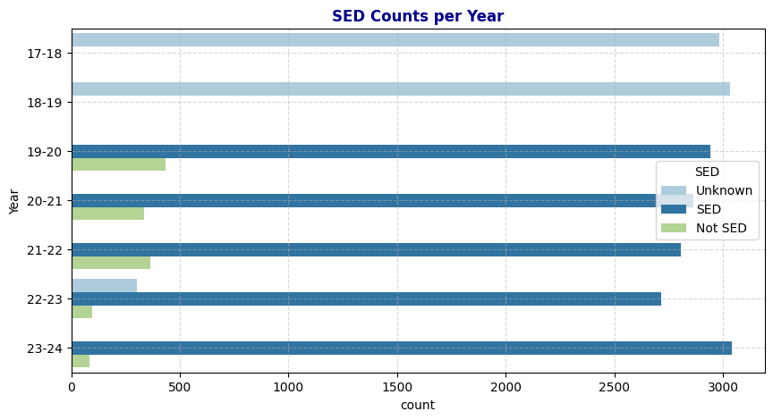
Duplicates and Irrelevant: Before and After
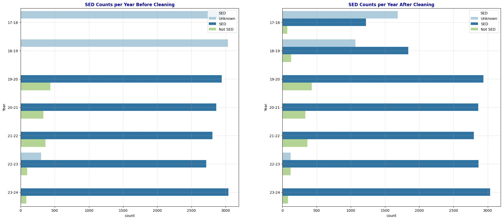
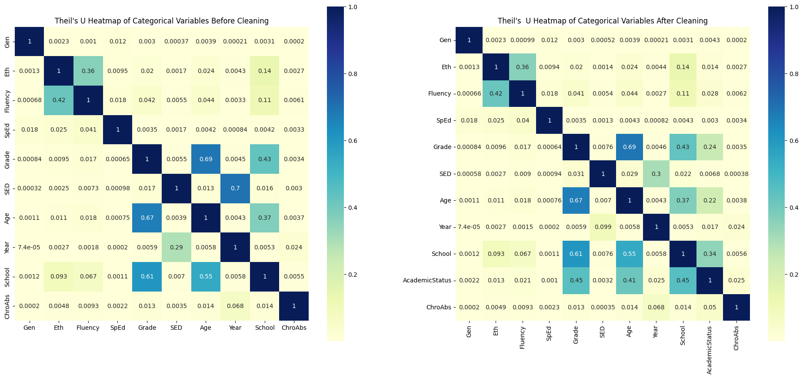
Observation: After modifying the Fluency and SED columns, I observed that Fluency retains its predictive power on Chronic Absenteeism, while SED shows a significant decrease in predictive strength (dropping from 0.0035 to 0.00035). One possible reason is that replacing Unknown values in SED diluted the relationship between Year and SED—since school years 2017-18 and 2018-19 no longer consist exclusively of Unknown values, SED no longer inherits the predictive power of Year on Chronic Absenteeism (where Year has the strongest predictive power).
Additionally, after transforming GPA into the categorical variable Academic Status, the heatmap now includes this new variable. Academic Status shows a strong predictive power on Chronic Absenteeism, with a correlation of 0.05, second only to Year. This aligns with the Pearson correlation heatmap observation where GPA and Attendance Rate had a strong correlation. Furthermore, Academic Status exhibits moderate predictive power on School, likely because elementary schools (covering grades -1 to 5) only have Unknown values in Academic Status.
4. Preprocessing for Machine Learning
Note on Selecting Variables for Our Machine Learning Model
Exclude Personal Identifiers: Omit ANON_ID and Birthdate as these are personal identifiers that do not contribute to predicting Chronic Absenteeism.
Exclude Redundant Attendance Metrics: Exclude AttRate, DaysEnr, and DaysAbs due to their strong dependency on one another, with Chronic Absenteeism (response variable ChroAbs) already capturing this information effectively.
Encoding for Categorical Variables: Use one-hot encoding for all categorical variables, as they are nominal (non-ordinal). Label encoding would introduce artificial order, which is unnecessary and could mislead the model. Additionally, we’ll select a subset of categorical variables with high predictive power and a manageable number of unique categories to reduce model complexity.
Exclude Weak Predictors: Exclude Gender and SED due to their minimal predictive power on Chronic Absenteeism.
Address Potential Bias: Exclude Ethnicity to avoid potential racial bias. Retain Fluency, as it has a stronger predictive relationship with Chronic Absenteeism and moderate predictive power on Ethnicity.
Simplify by Reducing Redundancy: Exclude Grade and Age as they have numerous unique values. Instead, retain School, which is strongly associated with both and provides similar information with fewer categories.
Final Variable Selection: AcademicStatus, Year, School, Fluency, and Special Ed as they each exhibit strong predictive power for Chronic Absenteeism and will support a more interpretable model.
5. Next Steps
Next Steps:
- Train a classification model using X_train and y_train.
- Evaluate its accuracy, precision, recall, and other metrics on X_test, y_test.
- Compare different model types (e.g., logistic regression, decision trees, random forests) to see which performs best in identifying chronically absent students.